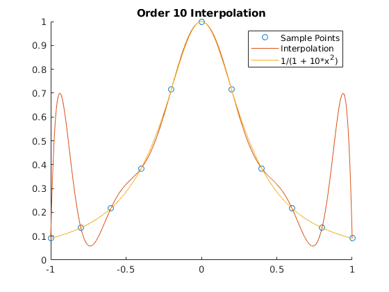

Zachary Kaplan
MATH 340 Assignment 5 2/22/18
Contents
Part 1
orders = 3:12; f = @(x) 1./(1 + 10*x.^2); max_err = zeros(size(orders)); for n = orders X = linspace(-1, 1, n + 1); Y = f(X); p = pfit(X, Y); figure hold on title(sprintf('Order %d Interpolation', n)); scatter(X, Y); % The points. XN = linspace(-1, 1, 1e3); YP = p(XN); YF = f(XN); plot(XN, YP); % The interpolation plot(XN, YF); % The function. legend('Sample Points', 'Interpolation', '1/(1 + 10*x^2)') max_err(n - orders(1) + 1) = norm(YP - YF, Inf); fprintf('Error for Order %2d: %e\n', n, max_err(n - orders(1) + 1)); end figure plot(orders, max_err); title('Error vs. Order'); ylabel('Maximum Error'); xlabel('Order of Interpolation'); fprintf(['\n'... 'Looks like the error would increase dramatically \n'... 'as n increases. It also appears that the error is \n'... 'significantly worse on even-powered terms\n\n']); fprintf('Functions Used:\n') dbtype pfit
Error for Order 3: 3.086579e+02
Error for Order 4: 6.004295e+02
Error for Order 5: 4.384108e+02
Error for Order 6: 6.004269e+02
Error for Order 7: 5.274267e+02
Error for Order 8: 7.341927e+02
Error for Order 9: 5.690260e+02
Error for Order 10: 6.004241e+02
Error for Order 11: 5.872031e+02
Error for Order 12: 1.143222e+03
Looks like the error would increase dramatically
as n increases. It also appears that the error is
significantly worse on even-powered terms
Functions Used:
1 function Pn = pfit(X, Y)
2 % pfit finds the polynomial fitting points defined by the cocentric vectors
3 % X and Y. NB: X and Y must have the same length.
4
5 % Force X to be a row vec.
6 X = reshape(X, 1, length(X));
7 % Force Y to be a row vec.
8 Y = reshape(Y, 1, length(Y));
9
10 function y = pn(x)
11 y = 0;
12 for i = 1:length(X)
13 % The i'th column of y is Li evaluated on each input x.
14 y = y + Y(i)*lagrange(x, i, X);
15 end
16 end
17
18 Pn = @pn;
19 end
20
21 function y = lagrange(x, i, X)
22 % lagrange returns the ith Lagrange function from the length(X) - 1 order
23 % Lagrange basis as defined by vector X evaluated at x
24 % NB: X must be a row vector.
25 % returns y as a column vector.
26
27 % Force x to be a col vec.
28 x = reshape(x, length(x), 1);
29
30 % \Pi_{j = 1, j \not= i}^{|X|} (x - X_j)/(X_i - X_j)
31 skip = [X(1:i-1) X(i+1:end)]; % skips X(i)
32 % The below uses matlab R2017's ability to automatically repmat matrix
33 % arguments to binary matrix operators. MAY NOT WORK IN R2016.
34 y = prod((x - skip)./(X(i) - skip), 2); % Product along column dimension
35 end
 Part 2
load('DataA') load('DataB') load('DataC') points = vertcat(A, B, C); p = pfit(points(:, 1), points(:, 2)); fprintf('The secret: %f\n', p(0));
The secret: 41.999023